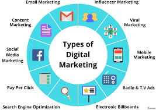
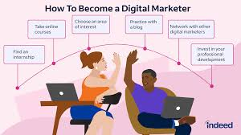

ما هو التسويق الرقمي؟

التسويق الرقمي هو استخدام الإنترنت للترويج للمنتجات أو الخدمات عبر قنوات مختلفة مثل وسائل التواصل الاجتماعي، البريد الإلكتروني، ومحركات البحث.
وهو من أكثر المجالات طلبًا في العالم الرقمي، حيث تعتمد عليه جميع الشركات لبناء حضورها الإلكتروني وجذب العملاء الجدد.
أنواع التسويق الرقمي

يشمل التسويق الرقمي عدة فروع رئيسية، من أهمها:
- التسويق عبر محركات البحث (SEO): تحسين موقعك ليتصدر نتائج البحث في جوجل.
- التسويق بالمحتوى: إنشاء محتوى قيم يجذب الجمهور ويبني الثقة.
- الإعلانات الممولة: مثل فيسبوك أدز وجوجل أدز لجذب العملاء بسرعة.
- التسويق عبر البريد الإلكتروني: وسيلة فعالة للتواصل مع العملاء وتحفيزهم للشراء.
- التسويق عبر المؤثرين: التعاون مع المؤثرين للترويج لمنتجاتك.
كيف تبدأ في التسويق الرقمي

البداية في هذا المجال لا تحتاج إلى شهادة جامعية، بل إلى شغف ورغبة في التعلم.
إليك خطوات عملية لتبدأ:
- تعلم الأساسيات من خلال الدورات المجانية على يوتيوب أو كورسيرا.
- أنشئ مدونة أو صفحة تجريبية لتطبيق ما تتعلمه.
- ابدأ بتقديم خدماتك على مواقع العمل الحر مثل Fiverr وUpwork.
- تابع التطورات باستمرار لأن المجال يتغير بسرعة.
أهم الأدوات التي تحتاجها

الأدوات تساعدك على تحليل النتائج وتحسين الأداء. إليك أبرز الأدوات المجانية والمفيدة:
- 📈 Google Analytics: لتحليل حركة الزوار على موقعك.
- 🔍 Ahrefs / SEMrush: لتحليل المنافسين والكلمات المفتاحية.
- 📱 Canva: لتصميم منشورات جذابة لوسائل التواصل الاجتماعي.
- ✉️ Mailchimp: لإدارة حملات البريد الإلكتروني بسهولة.
نصائح لتحقيق النجاح
النجاح في التسويق الرقمي يعتمد على الصبر والتجربة المستمرة.
لا تتوقع النتائج فورًا، بل ركّز على فهم جمهورك وتحليل النتائج لتتحسن باستمرار.
تذكّر أن كل حملة تسويقية هي فرصة للتعلم والنمو.
📈 الخلاصة
التسويق الرقمي هو مفتاح النجاح في عصر الإنترنت. سواء كنت صاحب مشروع أو مستقل، تعلم هذه المهارة سيمنحك فرصًا لا حصر لها لتحقيق الأرباح.
ابدأ اليوم، وطوّر نفسك خطوة بخطوة، وستجد أن كل جهد تبذله يعود عليك بأضعافه.
💬